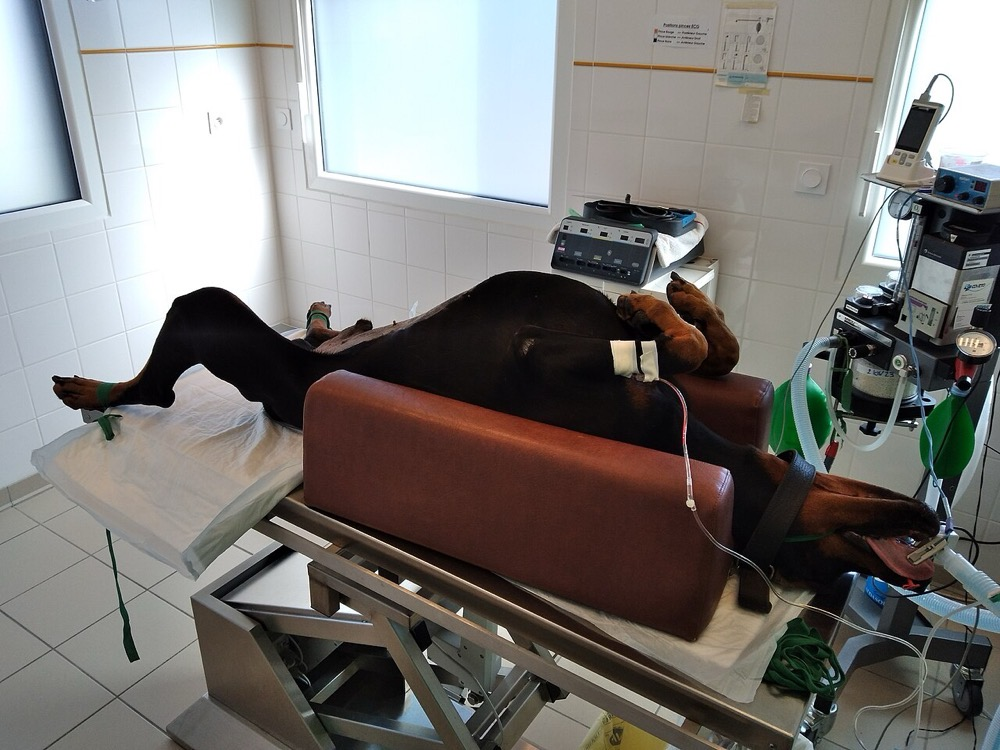
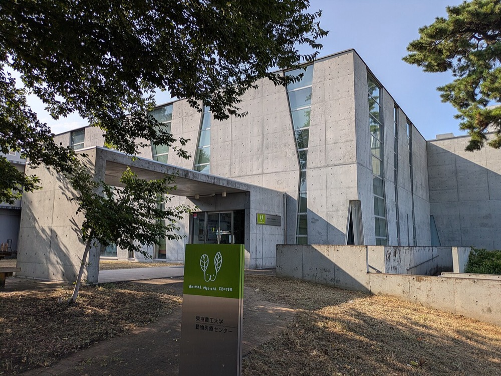

院長が1人で診療する動物病院を、融資を使って1院ずつ買収する。買収した病院の検査・購買・採用・予約を共通化し、地域の中核病院に二次診療を集める。株式会社が動物病院を所有できるため、歯科や介護と異なり、利益を連結で計上できる。
2025年12月末の飼育動物診療施設は17,200施設で、うち小動物とその他を診療する施設は13,046施設である1。13,046施設のうち8,067施設は就業する獣医師が1人である1。犬の飼育頭数は682万頭、猫は884.7万頭である2。
動物病院の診療市場の規模を示す統計は確認できなかった。ペット関連の総市場は2024年度に1.9兆円と推計されている2。
推計 診療市場 ＝ 犬の頭数 × 犬1頭の年間診療費 ＋ 猫の頭数 × 猫1頭の年間診療費
682万頭 × 5万円 ＋ 884.7万頭 × 3万円 ≒ 3,410億円 ＋ 2,654億円 ≒ 6,064億円
1頭の年間診療費は本ページの仮定値である。保険加入の犬では7歳の平均が100,687円である4。保険に入らない犬猫と受診しない犬猫を含めるため、平均をこれより低く置いた。施設数で割ると1施設当たり約4,650万円である。
米国では2017年にMarsが動物病院チェーンのVCAを負債を含め約91億ドルで買収した。VCAは北米に約800の動物病院と60の検査所をもっていた7。世界市場の規模は一次資料で確認できなかった。
| 年 | 変化 | 数値 |
|---|---|---|
| 2015年 | 米国で統合主体5社が占める診療所の比率 | 10%未満8 |
| 2017年 | MarsがVCAを買収した | 約91億ドル、約800病院7 |
| 2023〜2025年 | 米国の統合の進み方 | 統合主体5社で診療所の約4分の1。専門・救急病院の約75%と一次診療の約25%を統合主体が所有し、売上では約50%に当たるとの推計がある8 9 |
| 2024年6月 | 国内の動物病院グループが上場した | WOLVES HAND。2024年6月期の売上高49.9億円5 |
| 2025年12月 | 国内の小動物等の診療施設 | 13,046施設のうち獣医師1人が8,067施設、61.8%1 |
| 2026年7月 | WOLVES HANDが動物病院運営会社を子会社化した | 国内でも買収による拡大が始まっている6 |
国内の診療施設の6割は獣医師1人の個人病院で、院長の引退が病院の廃止に直結する。米国で統合が10年で進んだ条件は、国内でも院長の高齢化と二次診療の需要として現れている。院長の年齢構成は本ページでは確認できなかった。

| 種類 | 事業者 | 規模と動き |
|---|---|---|
| 上場の病院グループ | WOLVES HAND | 2026年6月期の売上高52億円2。2024年3月時点でサテライト病院26拠点とセンター病院11拠点5。2026年6月期第3四半期累計は前年同期比13.6%増で、M&Aで加わった子会社が寄与した5 |
| 上場の二次診療 | 日本動物高度医療センター | 2026年3月期の売上高45億円2。一次診療の病院から紹介を受ける高度医療の病院 |
| 非上場のグループ | 地域の複数院グループ | 売上を一覧にした資料は確認できなかった |
| 海外の統合主体 | Mars、NVAなど | 国内の動物病院の買収は確認できなかった |
上場2社の売上はともに推計市場の1%に届かない。国内の首位は確定しておらず、売上100億円台で首位になりうる段階である。
首位の条件 1つ目は、獣医師の採用と定着である。小動物の診療に従事する獣医師は2022年に16,541人で2、病院を買っても獣医師が辞めれば売上が失われる。2つ目は、1つの都市圏に一次診療の病院を集め、二次診療の中核病院へ紹介を集めることである。3つ目は、院長の引退に合わせて承継を提案できる経路を、獣医師会・薬品卸・税理士との関係で確保することである。

| 用途 | 金額 | 検証すること |
|---|---|---|
| 財務・労務の調査、仲介手数料 | 500万円 | 院長の個人の収入と病院の利益を分けて算定できるか |
| 1院目の取得の自己資金 | 1,500万円 | 売上1億円・EBITDA約1,500万円の病院を約6,000万円で取得できるか |
| 検査機器と予約システムの更新 | 800万円 | 1日の診療件数と客単価の変化 |
| 獣医師と動物看護師の採用 | 700万円 | 院長の退任後も診療を続ける獣医師を確保できるか |
| 運転資金 | 500万円 | |
| 合計 | 4,000万円 |
| 月 | 計画 |
|---|---|
| 1〜3月目 | 1つの都市圏に絞り、獣医師2〜3人・売上0.8〜1.5億円・院長60歳以上の病院を30院まで一覧にする |
| 4〜6月目 | 5院の院長と面談し、1院と基本合意する。院長には2年間の勤務継続を条件として提示する |
| 7月目 | 取得する。資金は自己資金1,500万円と日本政策金融公庫の承継向け融資4,500万円とする10 |
| 8〜12月目 | 検査と購買を共通化する。同じ都市圏で2院目の候補を3院まで絞る |
1年目の判定基準は、獣医師の離職がなく、取得前と比べて営業利益率が2ポイント以上上がることである。
| 段階 | 資金 | 金融機関 | 条件 |
|---|---|---|---|
| 1〜3院目 1〜2年目 | 事業承継融資 | 日本政策金融公庫 国民生活事業、信用金庫 | 公庫の限度は別枠7,200万円10 |
| 4〜20院目 2〜5年目 | 買収融資、資本性劣後ローン | 地銀、日本政策金融公庫 中小企業事業 | 資本性ローンの限度は15億円、期限一括返済で最長20年11 |
| 検査機器と画像診断装置 | リース | リース会社 | CTとMRIは二次診療の中核病院に集め、リースで調達する |
| 21院目以降 5年目以降 | シンジケートローン | メガバンク、地銀の協調融資 | 連結EBITDAの3〜4倍を上限に借りる |
| 年目 | 1 | 2 | 3 | 5 | 7 | 10 |
|---|---|---|---|---|---|---|
| 病院数 | 2 | 6 | 15 | 45 | 110 | 280 |
| 売上高 億円 | 2 | 6.5 | 17 | 55 | 140 | 380 |
| 営業利益 億円 | 0.1 | 0.5 | 1.7 | 6 | 17 | 50 |
| 累計投資 億円 | 1.6 | 5 | 12 | 38 | 95 | 250 |
| 借入残高 億円 | 1.4 | 4.3 | 10 | 30 | 70 | 170 |
| 年目 | 1 | 2 | 3 | 5 | 7 | 10 |
|---|---|---|---|---|---|---|
| 病院数 | 1 | 3 | 6 | 14 | 28 | 60 |
| 売上高 億円 | 1 | 3 | 6.3 | 15 | 31 | 70 |
| 営業利益 億円 | 0.03 | 0.15 | 0.4 | 1.2 | 2.8 | 7 |
| 累計投資 億円 | 0.8 | 2.2 | 4.5 | 11 | 22 | 46 |
| 借入残高 億円 | 0.7 | 2 | 4 | 9 | 17 | 34 |
前提
楽観の10年目は売上高380億円で、1,000億円の目安に届かない。推計市場6,064億円のうち約6.3%である。保守では60院、売上高70億円に留まる。
推計市場は6,064億円で、1,000億円以上の条件を満たす。現在の上場首位は売上高52億円である2。この会社が直近の伸び率13.6%5で10年伸び続けると、52億円 × 1.136の10乗 ≒ 186億円になる。
| 計画 | 7年目 | 10年目 | 首位との比較 |
|---|---|---|---|
| 楽観 | 140億円 | 380億円 | 7年目に、上場首位が13.6%で伸びた場合の約127億円を上回る |
| 保守 | 31億円 | 70億円 | 10年目でも上場首位の現在の売上に近い水準で、首位に届かない |
楽観では7年目に首位に届く。条件は年平均28院の買収を獣医師の離職なしで進めることである。非上場のグループの売上は確認できず、首位の判定は上場2社との比較に留まる。
停止する位置は2つある。1つ目は獣医師の採用である。110院に必要な獣医師は1院2.5人として約275人で、小動物の診療に従事する獣医師の約1.7%に当たる2。2つ目は、上場の病院グループと海外の統合主体が同じ病院を買い、取得価格が上がる場合である。
米国では統合主体が専門・救急病院の約75%を所有している9。米国と欧州に後から参入する余地は小さい。
| 順 | 国 | 理由 |
|---|---|---|
| 1 | 台湾、韓国 | 犬猫の飼育が都市部に集中し、個人病院が中心とみられる。統合の進み方は確認できなかった |
| 2 | タイ、シンガポール | 日本と同じ犬種と医療機器の需要がある。二次診療の手法を提供する |
動物医療は各国の獣医師の資格制度の下にあり、グローバルなインフラになる見込みは低い。
| # | 基準 | 判定 | 根拠 |
|---|---|---|---|
| 1 | 50年、魂を燃やし続けられるか | 創業者が判定 | |
| 2 | 10年以内に、国内市場規模1,000億円以上の市場でシェア1位になれるか | ○ | 推計市場6,064億円の首位は売上52億円で、楽観では7年目に140億円となり首位に届く。保守では届かない |
| 3 | 4,000万円で始められ、融資で伸ばせるか | ◎ | 1院目は約6,000万円で、公庫の承継融資と自己資金で取得できる。株式会社が所有できるため連結の利益を返済に使える |
| 4 | グローバルなインフラになり得るか | × | 米国と欧州は統合が進み、獣医療は国ごとの資格制度の下にある |
| 5 | 営業力が最初の売上に直接結びつくか | △ | 営業は院長への承継の提案に結びつくが、病院の売上は獣医師の診療と飼い主の来院で決まる |
| 6 | 同じビジョンを共有する仲間を誘える事業か | 創業者が判定 | |
| 7 | 本業が早く現金を生み、返済と出資の原資になるか | ○ | 診療は自由診療の現金収入で、取得した時点で営業キャッシュフローがある |
| 8 | 投資先を束ねる群の中核になれるか | ○ | 二次診療・検査・薬品・採用の各事業がグループの病院を共通の需要にできる |
| 9 | 成長の資金源がA・B・Cのどれに当たるか | C | 取得した病院のキャッシュフローを返済原資にした借入で買収する |
1. 院長と獣医師の離職 個人病院の売上は院長の評判に依存する。院長が退くと飼い主が離れる。対策は院長の勤務継続を2年間の条件とし、後任の獣医師を取得前に確保することである。
2. 獣医師の不足 小動物の診療に従事する獣医師は約1.65万人である2。採用できる人数が病院数の上限になる。対策は研修制度を設け、新卒の獣医師を毎年採用することである。獣医師の総数は大学の定員で決まり、会社の側で増やすことはできない。
3. 取得価格の上昇 上場の病院グループがM&Aで拡大している5 6。米国の統合主体が国内に参入すれば、取得価格は上がる。対策は1つの都市圏に集中し、紹介と二次診療の便益を院長に示すことである。価格競争そのものは潰せない。
4. 飼育頭数の減少 犬の飼育頭数が減れば診療の需要も減る。2025年の犬は682万頭、猫は884.7万頭である2。対策は高齢の犬猫の慢性疾患と二次診療に重点を置き、1頭当たりの診療を増やすことである。